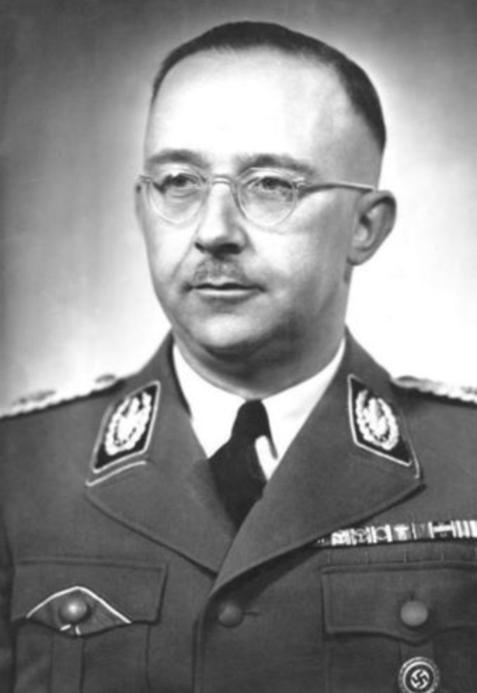

Photographie d’archive de Heinrich Himmler, présentée dans un cadre strictement historique.
Présentation générale
Heinrich Himmler (1900–1945) fut l’un des principaux dirigeants du régime nazi. En tant que Reichsführer‑SS, il dirigea la Schutzstaffel (SS) et joua un rôle central dans la mise en place et la gestion de l’appareil de répression du Troisième Reich.
Son rôle fut déterminant dans la politique de persécution et d’extermination menée par le régime.
Fonctions et responsabilités
- 1929 : Chef de la SS.
- 1936 : Contrôle de la police allemande (Gestapo, Kripo).
- 1943 : Ministre de l’Intérieur du Reich.
- Responsable : déportations, répression, extermination.
- Supervise : RSHA, police politique, services de renseignement.
Appareil SS et répression
Sous son autorité, la SS devint un véritable État dans l’État, contrôlant la police politique, les services de renseignement et une grande partie de l’administration du régime.
- Camps de concentration et d’extermination.
- Einsatzgruppen (unités mobiles de tuerie).
- RSHA (Office central de sécurité du Reich).
- Waffen‑SS (troupes combattantes du parti nazi).
Fin de vie
En avril 1945, Himmler tente de négocier avec les Alliés. Capturé par les Britanniques, il se suicide le 23 mai 1945 à Lüneburg pour éviter un procès.
Mémoire et responsabilité
Les historiens le considèrent comme l’un des principaux architectes du génocide. Sa figure est associée à la bureaucratie du crime et au système concentrationnaire.
Sources historiques
- United States Holocaust Memorial Museum (USHMM)
- Mémorial de la Shoah
- Yad Vashem
- Imperial War Museum